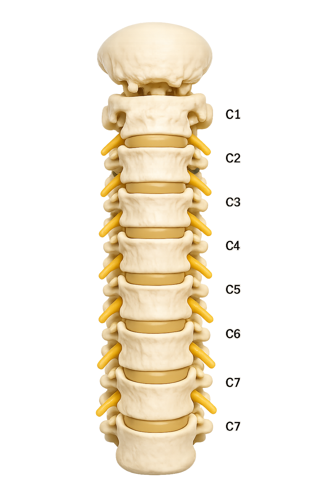
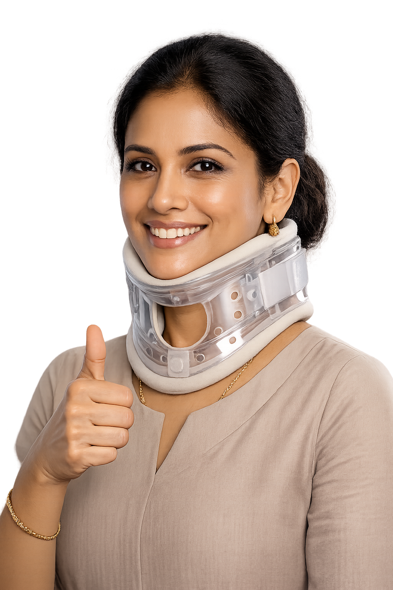

Everything to read before and after your cervical disc surgery
This guide walks through the precautions, the anatomy involved, the procedure your surgeon may perform, and how the ILT Spine implant restores movement at the treated level. Read it in order, at your own pace.
Common causes of neck pain
Neck pain can arise from many different sources. Understanding what might be causing your symptoms is the first step toward finding relief.
Poor Posture
Sustained periods of sitting with improper alignment—especially at desks or looking down at phones—places significant strain on neck muscles, leading to persistent discomfort and muscle fatigue.
Muscle Strain
Overexertion from strenuous activities, repetitive motions, or sudden, awkward movements can frequently result in painful muscle irritation and tightness in the neck and shoulders.
Herniated Disc
A disc protrusion in the cervical spine may compress surrounding nerves, serving as a frequent source of radiating neck pain that extends into the shoulders or arms.
Arthritis
Degenerative conditions such as osteoarthritis can impact the joints of the neck, often manifesting as chronic pain, stiffness, and reduced range of motion.
Trauma or Injury
Physical impact from accidents, falls, whiplash, or athletic activities can cause acute neck pain by inflicting damage on soft tissues, muscles, or the spine itself.
Understanding your cervical spine
The cervical spine is the part of your backbone in the neck — seven small bones that support your head and protect the nerves running down to your arms.

The parts that matter most
- Vertebrae (C1–C7) — seven bones stacked to form the neck, each one named C1 at the top to C7 at the base.
- Intervertebral discs — cushions between each vertebra that absorb shock and allow the neck to bend and turn.
- Spinal cord & canal — runs through a protected channel formed by the vertebrae, carrying signals to the rest of the body.
- Nerve roots — branch out between each vertebra

IMAGE — A side view X-ray of the neck showing the seven cervical vertebrae (C1–C7). The image helps visualize the alignment of the neck bones, disc spaces, and the natural curve of the cervical spine.
When to consider spine surgery
Surgery is not typically the first step in treating neck pain. It's usually recommended when conservative treatments have been exhausted and your symptoms are significantly affecting your quality of life.
When Other Treatments Fail
Surgery is usually the final step after physical therapy, anti-inflammatory medications, and extended rest haven't provided relief after several weeks. Your surgeon will want to see evidence that conservative approaches have been thoroughly tried.
Persistent Weakness or Loss of Function
If you notice your hands or arms are getting weaker, you're having trouble holding objects, writing, or performing daily tasks, surgery is often needed to stop further nerve damage and restore function.
Balance and Walking Issues
If you feel unsteady on your feet, notice your coordination is declining, or have difficulty with gait, this can indicate spinal cord pressure that requires surgical correction to prevent permanent damage.
Severe, Ongoing Pain
When pain is so intense that it prevents you from sleeping, working, or doing daily activities despite trying non-surgical treatments, surgery can help restore your quality of life and function.
Structural Damage or Injury
If an accident or injury has caused a fracture or instability in your neck, surgery is needed to stabilize the spine and protect the nerves from further damage.
Every case is unique. Your surgeon will evaluate your imaging, symptoms, and medical history to determine whether surgery is appropriate for you. Don't hesitate to ask questions or seek a second opinion.
Procedures performed on the cervical spine
When a disc wears down or herniates and presses on a nerve or the spinal cord, several surgical options exist. Your surgeon will recommend one based on your scans, symptoms and lifestyle.
Cervical disc replacement (arthroplasty)
The damaged disc is removed and replaced with an artificial disc, like ILT Spine, that preserves movement at that level rather than fusing it solid.
Know moreAnterior cervical discectomy & fusion (ACDF)
The disc is removed from the front of the neck and the two vertebrae are fused together with a bone graft and plate, trading motion for stability.
Know morePosterior cervical foraminotomy
A small amount of bone is removed from the back of the neck to widen the space a nerve passes through, relieving pressure without removing the disc.
Know moreLaminectomy / laminoplasty
The bony arch (lamina) covering the spinal canal is removed or reshaped to create more room for the spinal cord, often used for multi-level narrowing.
Know moreUnderstanding surgical risks
While cervical spine surgery has become increasingly routine and predictable, every surgical procedure carries inherent risks. A transparent discussion with your surgical team about your individual health profile is essential for your peace of mind and informed decision-making.
Infection
There is a small risk of infection at the incision site. Any infection can typically be treated effectively with antibiotics or, in rare cases, additional treatment. Your surgical team monitors the incision closely during healing.
Bleeding or Blood Clots
Bleeding or clot formation is a standard surgical risk that your medical team actively monitors and manages during and after your procedure. Preventive measures such as compression stockings and early mobilization help reduce this risk.
Anesthesia Sensitivity
Some individuals may experience temporary reactions to anesthesia, such as nausea or dizziness. Your anesthesiologist will discuss your medical history and adjust the anesthetic approach to minimize risks.
Nerve Irritation or Injury
While rare, there is a risk of nerve injury that could lead to temporary numbness, tingling, or weakness. Your surgeon takes multiple precautions to protect nerves during the procedure.
Pain Relief Expectations
While most patients see significant improvement in pain and function, some may experience incomplete relief or a recurrence of symptoms. Recovery is a process, and improvement may continue over weeks and months.
Implant Shift or Hardware Adjustment
If implants like artificial discs, screws, or rods are used, there is a small chance they may shift position or require further attention. Your surgeon will monitor this closely during follow-up visits and imaging.
Recovery Time Variability
Recovery timelines vary significantly between patients. More complex procedures may require a longer, structured rehabilitation period to ensure the best healing. Your surgeon will provide a personalized timeline based on your specific procedure.
Talk to your surgeon: Every patient's health profile is different. Please ask your surgeon about the specific risks and benefits that apply to your unique situation, medical history, and condition.
Preparing for your surgical journey
Making the decision to undergo spine surgery is a significant step that requires careful reflection and thorough preparation. The following steps will help ensure you are well-informed and confident in your path forward.
Secure a Precise Diagnosis
Utilize advanced imaging such as MRI, CT scans, or X-rays to clearly identify the anatomical source of your symptoms. These images help your surgeon determine if surgery is necessary and which procedure is best for you.
Exhaust Conservative Options
Dedicate adequate time to non-surgical interventions like specialized physical therapy, prescribed medications, targeted exercises, and therapeutic injections. Many patients find relief without surgery, so it's important to give these options a fair trial.
Seek a Second Opinion
Consulting another experienced spine specialist can provide additional perspectives, clarify your options, and offer valuable peace of mind. This is a standard practice and reputable surgeons welcome second opinions.
Understand the Recovery Timeline
Discuss the post-operative journey thoroughly with your surgeon. Recovery expectations vary significantly depending on the specific procedure, your age, overall health, and commitment to rehabilitation.
Select an Expert Care Team
Prioritize a partnership with a highly skilled spine surgeon and a facility equipped with modern technology and expertise. Ensure robust physiotherapy support is available both during your hospital stay and throughout your recovery at home.
The ILT Artificial Disc and how it corrects the disc space
ILT Artificial Disc is shaped to take the place of the disc your surgeon removes, restoring the height and angle that the worn disc had lost, while keeping that level of your neck able to move.
ILT Artificial Disc Animation to be added

-
The worn disc is removed
Your surgeon clears the damaged disc material from between the two vertebrae, relieving pressure on the nerve or spinal cord.
-
The space is measured and prepared
The disc space is sized so the right ILT Spine footprint and height can be chosen to match your anatomy.
-
ILT Spine is placed into the disc space
The implant sits between the vertebrae, immediately restoring the height the worn disc had lost.
-
Height and angle are corrected
Restoring height opens up the space the nerve passes through, and the implant's shape helps return the neck's natural curve.
-
Motion is preserved
Unlike a fusion, ILT Spine is designed to allow that level to keep bending and rotating, sharing load with the rest of the neck.
Every spine is different. The exact correction in height and angle your surgeon achieves will depend on your own anatomy and condition, the numbers above illustrate the general effect, not a guarantee for any individual case.
Post-surgery recovery: protecting your healing neck
Your goal after surgery is to protect your neck while it heals and to gradually return to normal activities. Follow these golden rules to support a smooth, successful recovery.
The Golden Rules of Early Recovery
The "No-BLT" Rule
Strictly avoid Bending, Lifting (anything over 2 kg), and Twisting your neck during the first 6 weeks. These movements can compromise your healing and implant position.
Move Frequently
Do not sit in one spot for more than 45 minutes. Get up and walk around to keep your circulation moving and prevent stiffness. Light walking is one of the best things you can do for recovery.
Keep It Dry
Keep the incision bandage clean and dry. Avoid swimming, soaking in tubs, or water-based activities until your surgeon clears you (typically 2-3 weeks after surgery).
Stay Ahead of Pain
Take your prescribed pain medication on schedule rather than waiting for pain to become severe. Controlling pain early helps you participate in rehabilitation and sleep better.
When to Call Your Doctor Immediately
- Difficulty breathing or swallowing
- Fever over 101°F (38.3°C)
- Any new or worsening weakness or numbness in your arms or legs
- Increased redness, swelling, or drainage at the incision
- Severe or worsening pain not relieved by medication
Important: Do not start any neck exercises until your surgeon gives you the green light. Follow your physical therapy plan exactly as instructed once you're cleared to begin.
Common questions
A few things patients often ask once they've read this far.
Will I feel the implant?+
No. ILT Spine sits inside the disc space and is not felt from the outside. Most patients are aware only of the healing incision in the early weeks.
How long does the implant last?+
ILT Spine is intended as a long-term, permanent implant. As with any device, your surgeon will monitor it at follow-up visits using imaging.
Will I be able to turn my head normally afterwards?+
The goal of disc replacement, unlike fusion, is to preserve movement at the treated level. Most patients regain a comfortable, functional range of motion during recovery and physiotherapy.
Is the implant visible on airport security or future scans?+
The implant is made of materials compatible with most imaging. You'll usually be given an implant card to carry — mention it during airport screening or before any future MRI.
What if my symptoms don't improve?+
Recovery timelines vary. If symptoms persist or change, contact your care team — they may recommend further imaging or adjusted physiotherapy.
Have a question specific to your case?
This guide is educational. Bring your questions to your surgeon or care team.